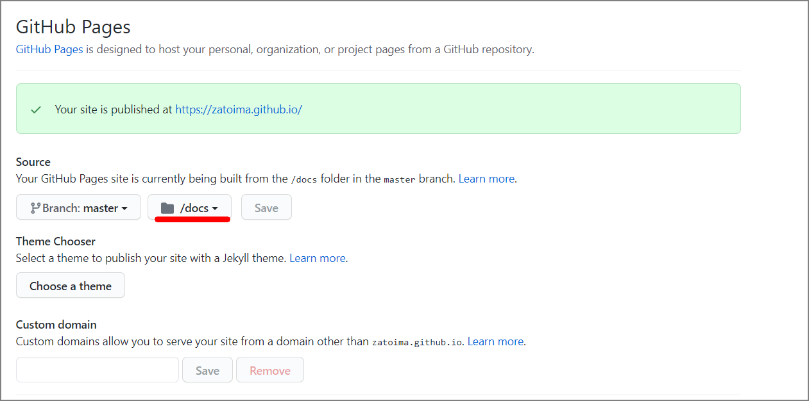

Academicの後継バージョンがよくわからなくなっていたので、Mainroadというテーマに変更した。
参考サイト
- HUGOのテーマ「Mainroad」の設定方法を紹介 https://itsys-tech.com/list/hugo/007/
- Hugo によるブログ作成と mainroad テーマのカスタマイズ - terashim.com https://terashim.com/posts/create-hugo-blog-and-customize-mainroad-theme/
また、今まではPublic配下のみをGithubにpushしていたが、hugo配下を全てpushするようにした。GitHub Pagesの設定にもどこのディレクトリを公開するかを選べる。

今後やりたいこと
- 全文検索機能
- メモとして使っているので、、。できればURLにキーワードを渡すことで検索結果が出るようにしたい
- Hugo + Lunrによる日本語全文検索 が良さそう
- メモとして使っているので、、。できればURLにキーワードを渡すことで検索結果が出るようにしたい
- ブログ名が全部大文字になっているのをどうにかしたい
- Socialリンクを貼る